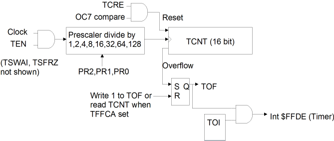

| Previous Section | Next Section | Index | Questions | Search the Text |
This section is split among several pages because of its length. The start of split sections have a table of contents showing each page and the contents of the current page. The current page is emphasized in bold.
A virtual requirement of any microcontroller is to have counters and timers. The Timer Module in the 68HC12 consists of 8 separate timer channels and a 16 bit clock-driven counter. The counter can be used for relative time measurements. Each timer channel is capable of input capture, where the time (counter value) of a signal edge at a pin is "captured" into a register. Input capture can be used to measure pulse widths or periods of external signals. The channel can also be configured for output compare, where at a preset time an output pin will change levels. Output compare allows generating single pulses or pulse trains. It can also be used to generate a pulse width modulated signal for servo control, however many microcontrollers, including most in the 68HC12 family have specific modules to perform pulse width modulation. In addition, there is a 16-bit pulse accumulator which can be used as an input pulse counter or for measuring long periods.
The HCS12 has an "enhanced" timer module with extra features, however only the basic, family wide features will be discussed here. In the HCS12, there are 4 8-bit pulse accumulators which may be used as buffers for input capture or as two 16-bit pulse accumulators. There is also an additional interrupt generating timer. The enhanced timer module is described fully in the ECT_16B8C Block Users Guide, however it is extremely difficult to follow because of all the features available.
The 8 pins, one for each of the timer channels, connect through Port T. Port T is one of the general purpose I/O ports discussed in an earlier section. When the timer channel is configured to output to a pin (for output compare) it overrides the configuration of the DDRT register for that pin and the PTT, Port T data register, for that pin is not used. Note that it is possible to have a Port T pin configured as an output pin yet be used for input compare simultaneously. It is also always possible to read the port T pin through the PTIT register.
The diagram below shows the counter portion of the module. The table shows the bits in the status and control registers which are used by the timer count circuit, TSCR1, TSCR2, and TFLG2. In addition, there is the 16-bit counter data register, TCNT.

To enable timer operation, the TEN bit must be 1. The system clock is then passed through a programmable divider and the resulting clock used to increment the TCNT register. With the typical 24 MHz system clock and with the prescaler set to divide by 1 (the default), the counter increments every 1/24 microsecond. Note: there is another source of clock to increment TCNT, which is described in Pulse Accumulator.
TCNT cannot be written. However we are never interested in the absolute value of TCNT but are interested in the difference between two values, which gives us the elapsed time. Consider the following code segment:
movw TCNT start ; start is a a 16 bit variable, holds start time
; Perform activity
ldd TCNT ; Get finish time
subd start ; finish-start = execution time
At the conclusion, register D has the time (in units of 1/24 microsecond) of the execution time of the activity. The actual values in TCNT don't matter, nor does it matter if TCNT overflows, which happens when it goes from the count of 65535 to 0. The only limitation is that the difference will be in the range of 0 to 65535. To measure longer times requires that we extend the size of the counter, which we can do in software.
| Timer Count Control and Status Bits | ||||||||
|---|---|---|---|---|---|---|---|---|
| Register | Bit 7 | Bit 6 | Bit 5 | Bit 4 | Bit 3 | Bit 2 | Bit 1 | Bit 0 |
| TSCR1 | TEN | TSWAI | TSFRZ | TFFCA | 0 | 0 | 0 | 0 |
| TSCR2 (was called TMSK2) | TOI | 0 | 0 | 0 | TCRE | PR2 | PR1 | PR0 |
| TFLG2 | TOF | 0 | 0 | 0 | 0 | 0 | 0 | 0 |
| PR2 | PR1 | PR0 | Prescale Factor |
|---|---|---|---|
| 0 | 0 | 0 | 1 |
| 0 | 0 | 1 | 2 |
| 0 | 1 | 0 | 4 |
| 0 | 1 | 1 | 8 |
| 1 | 0 | 0 | 16 |
| 1 | 0 | 1 | 32 |
| 1 | 1 | 0 | 64 (not in original Timer Module) |
| 1 | 1 | 1 | 128 (not in original Timer Module) |
Every time the counter overflows, the TOF status bit will be set. The bit is normally reset by writing a 1 to the bit, in the typical 68HC12 fashion. However if the TFFCA control bit is set, then reading TCNT will reset the TOF status bit, however writing a 1 to the TOF status bit will not reset the bit. This is usually not desirable, however we will later that TFFCA has other effects which are useful.
We can use the interrupt system, by setting the TOI bit, so that an interrupt will occur whenever the timer overflows. The interrupt service routine can be used to increment higher order bytes in a counter we can extend to any size. Let's assume we have a 16 bit variable CNTEXT to hold the extension of the counter, and have initialized the timer circuit and interrupt vector:
movb #$80 TSCR1 ; TEN = 1
movw #timscr UserTimerOvf ; interrupt vector D-BUG12
movb #$80 TSCR2 ; TOI = 1, prescale factor = 1
The following will suffice for our interrupt service routine:
timisr:
ldd CNTEXT ; increment high order count
addd #1
std CNTEXT
movb #$80 TFLG2 ; Reset interrupt flag
rti
Now we have a 32 bit counter suitable for measuring times to 536 seconds (2^32 times 125nsec). But we aren't finished yet. Let's look at the code to get the current 32 bit time and store it in the 32 bit variable start.
movw CNTEXT start
movw TCNT start+2
If we used the two instructions above, we would find that it worked most of the time but failed occasionally. What is wrong? Suppose the current count is $0021FFFC when we reach the first instruction. We read CNTEXT as $0021. However the movw instruction takes 6 cycles to execute, so the interrupt occurs immediately after execution. Upon return from the interrupt, we execute the second movw, which reads TCNT as, say $0020 (the exact value is left as an exercise for the student!). So we've read the count as $00210020, which is off by 65536.
Reversing the order of the two instructions does not help matters. If we read TCNT first, it is read as $FFFD. The interrupt occurs and upon return CNTEXT is read as $0022, giving us a count of $0022FFFD, off by 65536 in the other direction.
An old programmer's "trick" allows us to read the value without problems. We read the upper word first, and then the lower, but we then check to see if the upper word has changed. If it has, we repeat reading the value.
r1: movw CNTEXT start
movw TCNT start+2
ldd CNTEXT
cpd start
bne r1
There are a few Timer Count control bits that haven't been mentioned in this section. TSWAI will cause the timer to stop while the wai instruction is being executed. If we are using TCNT to measure times and this bit is set, we will have incorrect measurements if the wai instruction is executed. So we probably would not want to set this bit. The advantage to setting the bit is that the power consumption during a wait is reduced more if the timer stops. The TSFRZ bit stops the timer during background debug mode. If we are using the background debugger, setting this bit can give more accurate results because the timer only runs when the processor is actually executing the program. Remember that the stop instruction will always stop the timer as it disables all internal clocks. We will look at the TCRE bit when we discuss pulse width modulation in The Special Case of Channel 7.
Continue with Input Capture.
Return to the Index.